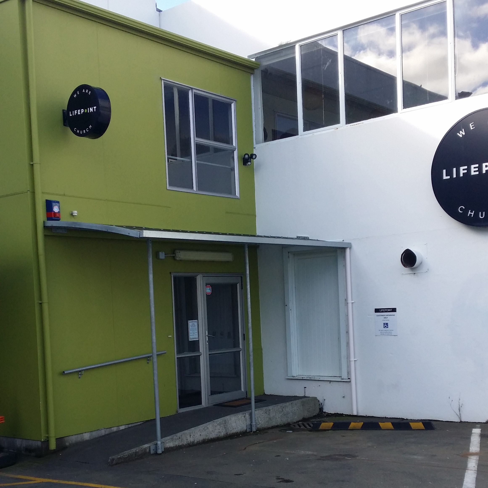

Lucy Jaegers
Connecting everything and everyone, powerlines are a constant part of our lives. They serve many different purposes in enabling our modern world and are crucial in facilitating every single kind of network we have. They transfer electricity to power the tools and machines used to connect to various networks. Alongside this they provide phone lines, these connect telephone landlines to the rest of the world while also providing connection to the internet.
As networking capabilities increase, much of the technology used to provide various connections to networks is situated below us. Through underground networks of cables, data is sent to and from our homes and the rest of the world. These manhole covers are the gateways to many of these cables and are a small window to the systems that exist below us.
CCTV, or closed-circuit television has become an increasingly common presence in our lives. It's hard to find a public space that's been left unseen by these CCTV cameras. Used primarily as security devices these cameras record our daily lives in public. They are constantly sending this information to wider networks, and in turn connecting us into those networks.
Though much of our internet is provided through cables and powerlines, antennae are everywhere. These enable various wireless networking for many different purposes. The antennae below serve residential places. Likely providing access to network television, most of which is becoming increasingly interconnected with the internet.

Throughout Lower Hutt the telecommunications company Chorus is installing fiber broadband. As part of this task they have placed cables yet to be installed along many of the power lines in the area. Once fully installed, these cables will help to enable a faster and more efficient connection to a much larger system. Existing as one small part of the system that connects us to the internet.